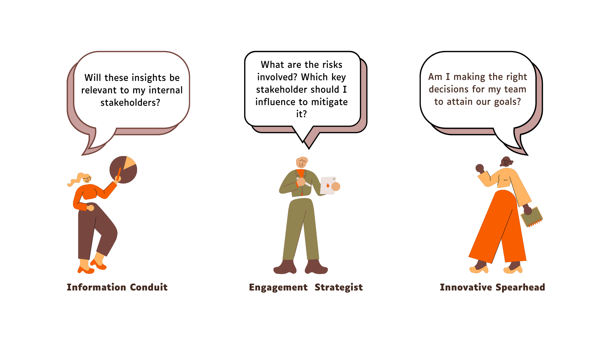
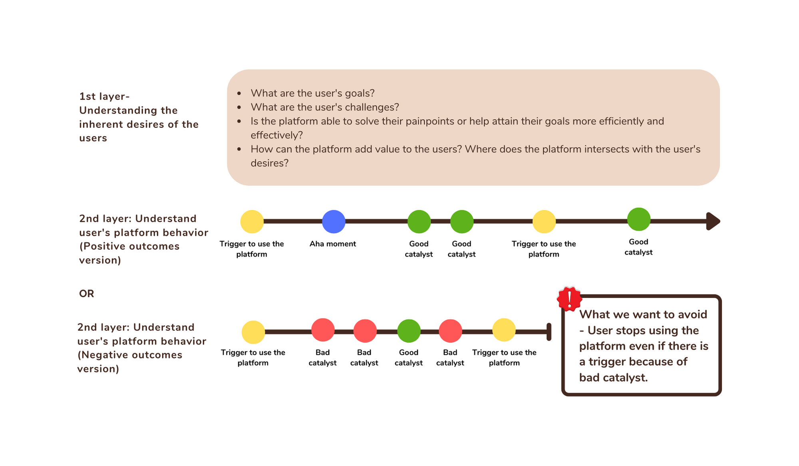
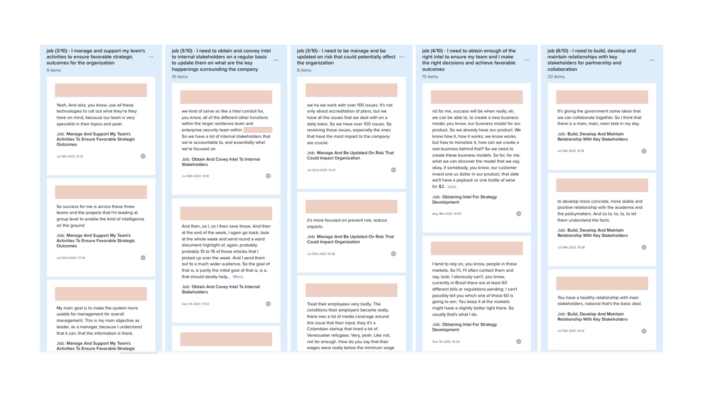
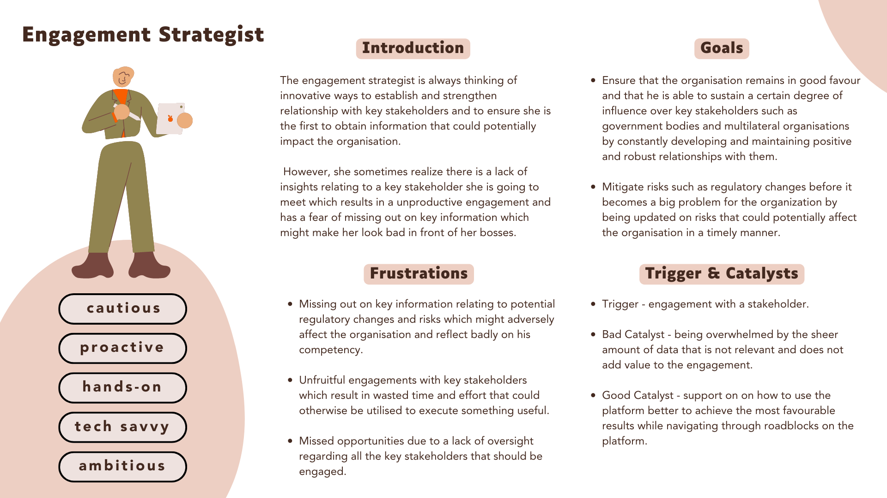
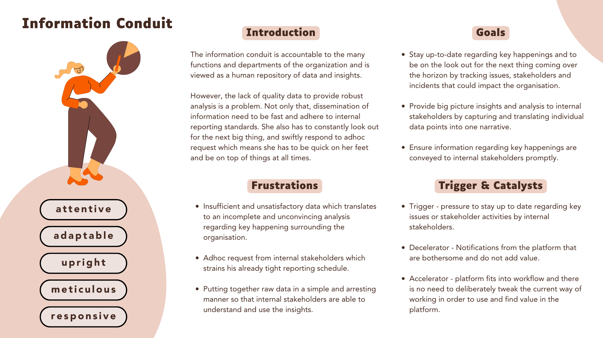
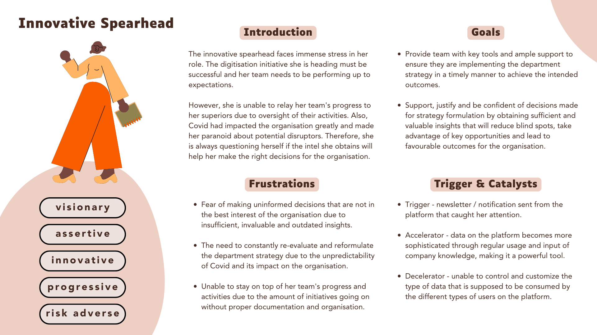

Turning user interviews into shared product understanding.
Researching the goals, challenges and platform behaviours of users of a complex B2B stakeholder-intelligence product.
Role
UX Researcher — research planning, interviews, synthesis and persona development
Year
2021
Participants
10 users from 10 organisations
Methods
Internal stakeholder interviews, user interviews, thematic analysis, affinity mapping and persona development

OVERVIEW
Understanding why product adoption was low.
The product was a complex B2B platform offering stakeholder and media intelligence, primarily for people working in external-affairs functions.
Adoption was low, and many users relied on customer success managers to deliver insights to them. Personas were an essential first step towards understanding users more deeply, improving product decisions and creating more personalised onboarding experiences.
RESEARCH OBJECTIVES
What did we need to learn about our users?
01
Their goals and challenges
02
What triggered them to use the platform
03
What kept them engaged
04
Where they experienced an “aha” moment
05
What friction discouraged continued use
MY ROLE
Leading the research from planning to adoption.
I planned and coordinated the research, crafted the interview questions and conducted 10 interviews with users from 10 organisations.
Recorded and transcribed each interview
Analysed insights through affinity mapping
Constructed three personas, including one core persona
Validated the personas with the organisation
Advocated for their use in product and onboarding decisions
INTERVIEW FRAMEWORK
Connecting users’ inherent goals with their platform behaviour.
I first spoke with customer success managers to gain an initial understanding of users’ goals, challenges and platform usage. The interview framework then explored two layers: what users wanted to achieve, and the triggers, “aha” moments and catalysts that influenced whether they continued using the platform.

A good catalyst accelerated platform use, while repeated bad catalysts could cause users to disengage.
SYNTHESIS
Organising interview evidence into five themes.
All interviews were recorded, transcribed and uploaded to EnjoyHQ. I used affinity mapping to group recurring evidence under user goals, challenges, triggers, good catalysts and bad catalysts.

Affinity mapping helped reveal recurring patterns across organisations and roles.
USER GOALS
Build relationships and make informed decisions.
Develop and maintain relationships with key stakeholders.
Obtain enough of the right intelligence to make sound decisions.
Stay updated on risks that could affect the organisation.
USER CHALLENGES
Find useful intelligence without relying on manual work.
Limited information about topics, countries or stakeholders.
Changing organisational priorities affected established workflows.
Manually discovering stakeholder connections and potential threats was difficult.
TRIGGERS
Use the platform when an issue or engagement creates urgency.
Before, during and after engaging with key stakeholders.
After a relevant newsletter or platform notification.
When an important issue or stakeholder activity could affect business outcomes.
GOOD CATALYSTS
Support, better data and workflow fit encouraged use.
Customer success guidance shortened the learning curve.
Data became more useful through regular use and company knowledge.
The platform fitted into an existing or new workflow.
BAD CATALYSTS
Unclear value and noisy data discouraged continued use.
Users were unsure how the platform added value to their role.
Information could feel inconclusive, unhelpful or difficult to sift through.
Users lacked control over what different audiences consumed.
THE PERSONAS
Three perspectives shaped by distinct goals and motivations.

Core persona — Engagement Strategist

Information Conduit

Innovative Spearhead
HOW THEY WERE USED
Giving teams a shared reference for product decisions.
After the personas were created, I validated them with the organisation and the customer success team confirmed that they reflected the users they supported.
I then constructed the core persona’s journey map. The product team used it to guide decisions for new features and shape personalised onboarding intended to activate users by leading them towards meaningful “aha” moments.
LIMITATIONS & NEXT STEPS
Treating personas as evolving research artefacts.
LIMITATION
A small and uneven participant sample
Ten participants were not enough to fully substantiate three robust personas. The Engagement Strategist was supported by the strongest evidence, while the other two required further validation. Most interviewees were moderately active users, so the research did not capture enough people at either end of the usage spectrum.
NEXT STEP
Validate and update the personas
Further interviews with highly active and inactive users could reveal different goals, challenges and usage patterns. As the user base evolves, a second version of the personas would support better feature prioritisation and more informed product decisions.
REFLECTION
Personas are most useful when teams keep returning to the evidence.
This project showed me that creating personas is not the final outcome. Their value comes from helping teams understand users consistently, challenge assumptions and connect research evidence to product and onboarding decisions.
It also reinforced the need to be transparent about sample limitations and to revisit personas as users, workflows and organisational priorities change.